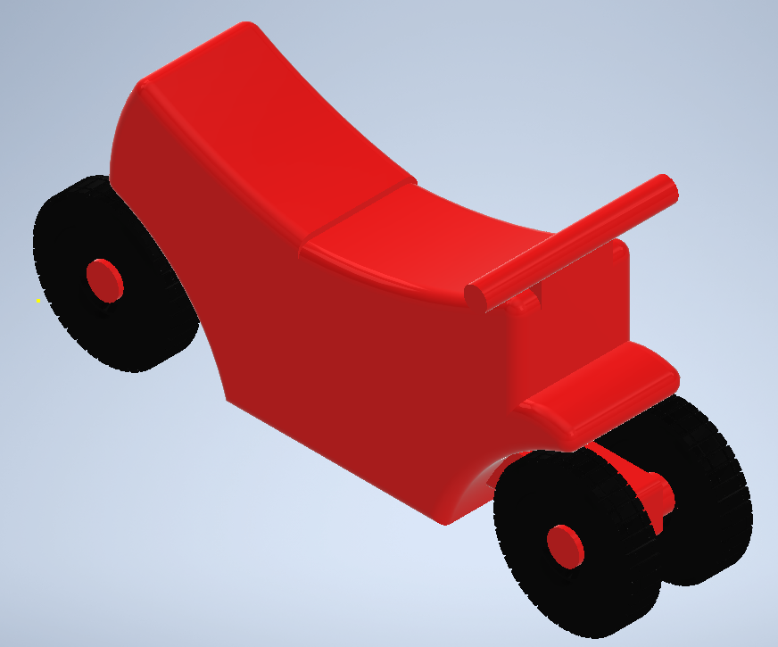
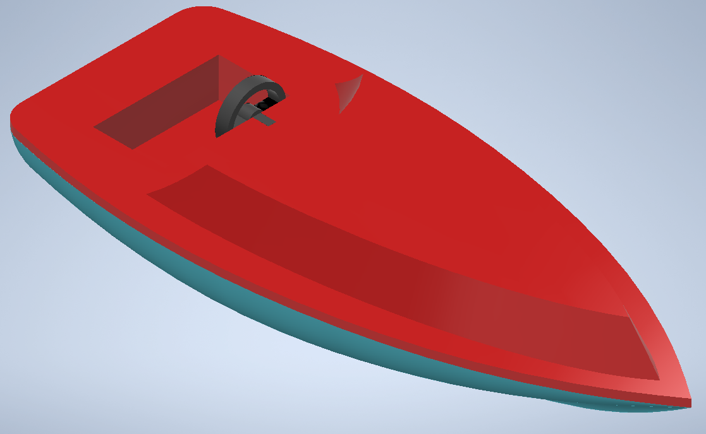
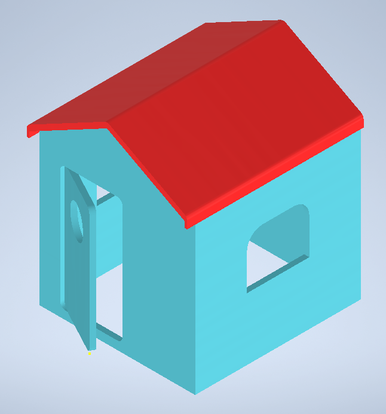

Automatización en producción de juguetes
La empresa Bricajo Toys acude a AUSOL en busca de una propuesta de automatización en el proceso de manufactura de producción de tres juguetes, cumpliendo los siguientes requerimientos.
- Una etapa con participación robótica, debidamente justificada.
- Gemelo digital de la planta en tecnomatix
- Sistema SCADA con gemelo digital en NX y conexión con STUDIO 5000
- Propuesta economica con indicadores para validar su viabilidad
Punto de partida
En base a los datos recolectados en planta, los productos y procesos se dividen así.
Productos
 Imagen 1. Moto de juguete. Fuente: Elaboración propia.
Moto, compuesta por cinco piezas. Chasis y cuatro ruedas. En colores rojo y negro respectivamente.
 Imagen 2. Barco de juguete. Fuente: Elaboración propia.
Barco, compuesto por cuatro piezas. Parte inferior, parte superior y el timón compuesto por su dos partes, en colores azul, rojo y negro respectivamente.
 Imagen 3. Casa de juguete. Fuente: Elaboración propia.
Casa, compuesta por seis piezas. Las cuatro paredes junto a puerta y techo. En colores azul y rojo respectivamente.
Para los tres productos se utiliza polipropileno, este material es el estándar en la industria juguetera. La empresa cliente, ya cuenta con este material mezclado para la uniformidad de los colores.
Proceso
El proceso de manufactura se divide en siete etapas. El punto de partida es la generación de los moldes de plástico desde una maquina inyectora, seguidamente un operario toma el molde y separa las piezas individualmente, de allí parte a un segundo operario encargado de los acabados, aquí entra el corte de rebaba y la inspección de calidad. Seguidamente viene el proceso de ensamble, actualmente este se lleva a cabo de la mano de dos operarios, que realizan el ensamble y la puesta de stickers, lo siguiente es el empaquetado y embalado en cajas de los juguetes, para finalmente dar paso al despacho del producto en pallets.